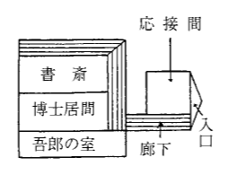
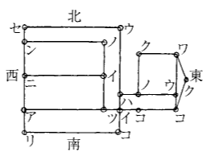

「どうだね
晩餐のあとの
「近ごろ例の謎の
「ああ、あれですか？」
龍介少年は食後の
「あれは近頃にない面白い事件なんです、
「なる程」と博士が頷いた。「面白い事件らしいが、だいぶ複雑しているな！」
「僕ぁ大へんこの事件は面白いと思っているんです、ちょっと待って下さい」
そういって龍介少年は席を立った。
「僕、二三日前から、この事件について調べあげたノオトがありますから、それをすこし
そして、自分の部屋へ去ったが、すぐ一冊の部厚な雑記帳を持ってきて、それを繰りながら話しつづけた。
「ねえ
「八人も同じ邸で殺人事件があったって？」
「そうです。ねえ
「うん、しかし、どうもすこし複雑すぎるな、子供のお前には無理な事件だよ！」
「そうでしょうか、けれど、僕はこの事件を解決してみたいと思いますよ」
話しあっているところへ、書生が一枚の名刺を持って、龍介に客のあることを知らせた。
「大至急お眼にかかりたいと申されまして」
名刺には「理学士、松川捨三」と、印刷してある。龍介は二三度その名を口の中で
「
書生が去ると、龍介はなにか深く考えるように
「誰だね、訪ねてきたのは？」
「理学士、松川捨三……殺された博士の、そうですね、多分弟か、でなければ
そして、決心したように、大股に部屋を出ていった。
「私が松川捨三と申します」
応接間に待っていた男は、龍介を見ると、龍介が案外に小さな子供なので驚きながら、それでも
「どうぞ用件を話して下さい！」
龍介は鉛筆とノオトを
「簡単に申しますと！」と松川理学士も、相手が子供に似合わぬ
「実は、私は博士の弟ですが、どうかして兄の殺された原因がしりたいと思うのです。そして、出来たら殺した犯人を探しだしたいので、
「
「
「何か用意するものがございますか？」
「そうですね、僕ぁ昼飯には厚肉のテキが頂きたいんです、松川さん」
龍介は笑った。松川理学士もさそわれて、
「承知しました。御馳走をたくさん
その夜龍介は
翌日の午前十時、龍介は芝区白金三光町の白堊館にきていた。
松川理学士は既にきていて、先に立って龍介を案内しながら、いろいろと説明につとめた。
白堊館は別の図にかいたように、応接間と書斎にわかれて建っていた。書斎の方は二階建で下には室が三つあり南の端の部屋に下男の吾郎が住んでいた。二階は博士の書庫になっていた。

松川理学士は、龍介を導いて博士の殺された書斎へ入った。
「ここで兄は殺害されたのです！」
「博士の死んでいたのはこの椅子ですね？」
「そうです、その椅子です」
「まだこの
「ちっとも手をつけてありません」
龍介はすっかり緊張した容子で、博士の深椅子を中心にして、熱心に室内を調べはじめた。
椅子から
「何か証拠になる物でもありますか」
松川理学士が待ちかねて
それは小学校の教室の入口の
「ちょっとすみませんが下男をよんできて下さいませんか」と龍介がいった。
「呼んでまいりましょう！」理学士はすぐに去った。
松川理学士が去ると、龍介は鼠のように素早く、椅子をひきよせてその上に乗り、
「あった！」小さく叫んで龍介が窓の枠から
「そろそろ
そう呟きながら、大急ぎで椅子を元に戻した時、ちょうど理学士が下男をつれて戻ってきた。
「私が吾郎でございます！」
そういって下男の吾郎が、龍介の前に立った。見たところ五十余の頑丈な男で、妙に眼が鋭く、鼻がとがってなんだか凄い顔だった。
「君は博士の
 」
」龍介はきっぱり、きめつけるようにいった。
「何か音って……別に」
「いや、たしかに何か音がしたろう、白い幽霊が何かいっていただろう？」
龍介は眼ひとつ動かすのも見逃がすまいと、鋭く吾郎を睨みながら
「ええ、ええ、そういえば、なにか幽霊がいっていましたっけ」
吾郎は何となく凄い顔に、にんまりと冷めたい笑を浮かべながらいった。
「その時、
「よし結構！ もういいから出ておくれ！」
「へい！」吾郎はじっと龍介を
しかし、吾郎は間もなく引返してきて、のろくさした調子でいった。
「そいから……役に立つかなんか知んねえけど、旦那様ぁいつも、その壁にかけてある額の字を見ちゃあ、これさえ分かったらなあって、云っていらっしゃりましたよ」
龍介は教えられた額を見た。それは日本海大海戦の
その次には「日は東より
龍介はそれをていねいにノオトに写しとった。
「では、すみませんが、庭を見せて頂きます」
龍介はそういって書斎を出た。
庭には別に注意するようなものはなかった。ただ吾郎の部屋の外へきた時大きな鳥籠があって、中に鶏ほどもある珍しい南洋の
「おや、珍しい
「ああ、それや
「それは三年ばかり、以前に、私が南洋から持って帰ったもので、今は馴れていますが非常な猛鳥で、怒ると犬や
「そうですか、怖いですね」
云いながら、何気なく龍介は鳥籠の
「ぎゃ！ ぎゃ！ ぎゃ！」と叫びながら
「はっ！」と思って身を沈める、とたんに、幸いにも傍から松川理学士が素速く手を伸ばして、
「ああ驚いた、凄いですねえ！」
さすがの龍介びっくりして、額の汗を拭きながら、苦笑をもらした。
その夜、春田家の晩餐には、一家が揃っていた上に、
「
晩餐後の
「伯父さんの家はたしか旧長谷川
「そうだよ。何かあるのかね」
「長谷川侯の家老に、たしか勝浜という家老がいたはずですが、明治になってからどうなったか、ご存知ないですか？」
「ああ勝浜か、
「そうですか、どうも
「なんだね……」
と、林田子爵は笑いながらいった。
「また何か名探偵が事件を解決しようというのかね？」
「ああ龍介はね」と、博士が傍からいった。「あの白堊館の幽霊殺人事件に手をつけているんですよ」
「ほうそれは大変だ、あれは警視庁でも手をやいている事件だからな、龍介にも、ちょっと解決はつくまいぜ」子爵がいった。
「ところが」、と龍介が
「本当かい龍介
」子爵も父博士も驚きの声をあげた。
「本当ですとも、僕ぁ一度やるといったら、しそんじることはありませんよ！」龍介はそう云って笑った。
「まあお兄様、それじゃもうすっかり調べ終ってしまったの？」そばから妹の
「そうだ。そういつも文子にお手伝いさせやしないよ、まあこん度は黙って見ていてごらん」
そういって龍介は立ちあがった。
「では、僕は先に失敬します。これから解かなければならぬ暗号がありますから」
そして食堂を出て、自分の勉強室へ引籠った。――本当に龍介はもう事件を解決しているのであろうか
突如！
例によって黙って、ぽつりとも物をいわずに、自動車で警視庁へいったかと思うと、疾風のように帝大医科へ乗りつけた。そして、一度外へ出ると妙なことには蝋細工屋をたずねて、腕利きの細工師を一緒につれて医科大学へ戻った。龍介と蝋細工師は医科大学の教室で半日暮らして、午後二時ごろ、白い布に包んだ五尺ほどの荷物を持って大学を出た。
大学を出た龍介は、荷物を持って自動車であの
「やあ坊っちゃん、よくいらっしゃいました」
壮太は、龍介がわざわざ訪ねてくれたので大
「おいおい又坊っちゃんていったな、じゃもう友達じゃないぞ、失敬な！」
「やあ、御免なさい、御免なさい、つい忘れちゃったんです、もう云いませんから勘弁してください」
壮太は頭をかきかきあやまった。
「よし、じゃあ今度だけ
「やあそいつは素的ですね、どんなことでもやりますよ」
「まあちょっと耳をかしたまえ」
龍介はそういって、壮太の耳に口をよせてなにかしばらく囁いていたが、
「ね、分かったろう？」
「ようござんす、幽霊って奴あ
「じゃ頼んだよ、いいかい、ちょうど八時にだぜ！」
そう固く約束して、龍介は白い布で包んだ荷物を壮太にあずけて、ふたたび自動車を警視庁へ走らせた。
その日、晩餐後七時ごろ龍介は徒歩でぶらりと白堊館を訪れた。
「すこし調べることがあるから！」
そういって博士の書斎へ入った龍介は、五分ばかりすると、手紙を持って出てきて、「すまないがこの手紙を松川理学士に届けてくれ、そして返辞を貰ってくるんだ」といいつけた。
「へい、行ってめいりやすだ」
吾郎は手紙を
吾郎は表門からでてゆくと、反対に裏門から
そして、三十分ほどして、吾郎が松川理学士の返辞をもって帰った時には、最早壮太の姿はなく、龍介は書斎でしきりになにか考えごとをしていた。理学士の返辞を受取ると、龍介はあけて見もせず、引裂いて、白堊館を出た。
「さあ、いよいよ明日だぞ！」
門を出た龍介は愉快そうに叫んだ。
その翌日、午前中龍介は警視庁に電話をかけて「九時までに約束どおり！」と、念をおしていた。それから
「僕が合図するまでにはどんなことがあっても出てきてはいけないぞ！」と、何事か命令した。
かくて、いよいよその日の午後十時三十分である。闇の中を走ってきた自動車が一台、白堊館の前に停まった。それは龍介との約束によってやってきた松川理学士だった。
勝手知った亡き博士の書斎へきてみると、すでに龍介少年は来て待っていた。二人は軽く挨拶して席についた。
「松川さん！」まず龍介が口をきった「実はこの白堊館について、大変な秘密が発見されたのです
 」
」「大変な秘密？」理学士はきらりと
「それは全体何ですか
」「これなんです！」そういって龍介は一枚の紙片を差し出した。それは例の日本海海戦の
「これがなんで秘密なんですか？」
「これはね、この邸の敷地のある場所に、莫大な金貨を埋めた秘密の案内図なんです！」
「莫大な金貨
」理学士はごくっと唾をのんだ。「そうです、約二万円ばかりの現金です！」
「で、どこに埋まっているか分かったのですか、え、春田君
」「まあお待ちなさい、どうしてこの邸の下にそんな金貨が埋めてあるか、そのわけを先にお話しする方がよいと思います」そこで龍介は話を始めた。
この邸は、古い江戸地図を調べてみると、元長谷川出羽守侯の下邸のあった場所である。長谷川家では維新後間もなく、元家老をしていた勝浜主膳という者が主家の金二万両をどこかに隠匿して逃げた。そんなことがあって、いつか、この下邸は潰れて荒地になっていたが、二十年ほどして或る人が買取って家を建てた。それが勝浜主膳の身寄りの者であったらしい。
しかし、勝浜が二万両をどこかに隠していることを知っていた者があってこの家の敷地に埋めてあるに相違なしと目星をつけ、この家に棲む者を殺しては、その金を掘り出そうとしたのであった。
「どうです松川さん、僕の推察は当たっていると思いませんか？」
「で、この暗号が分かったのですか、春田君？」松川理学士は
「分かりました。
「そりゃ分かっているが、その十九字が何を意味しているんだか分からん」
理学士はますます急きこんでくる。
「そうです、その十九字が問題です」
「分からないのですか？」
「いや分かりました。つまりそれはこの白堊館の大柱の数なんです！」
理学士は思わず驚きの
「僕はすぐに調べてみたら、大柱の数はきっちり十九です、つまりこの大柱の内のノの字に当る場所に、二万両の金貨が埋めてあるわけなんです。さて今度はそのノの字の柱がどれかを探し出すのですが、これはごく簡単に分かりました。この白堊館は東向きに建っていますね。そして、あの額に（日は東より出でて西に。水は北より南に流る）と謎のような言葉があるでしょう。あれなんです。つまり東の柱から始めて、北から南へ数えながら、西へ進んで行って、ノの字のあたる柱がそれなんです。僕はそれを略図に書き出して見ました！」龍介はそういって略図を取り出して見せた。それによると、博士の書斎の内角の柱だということが、図のように云われていた。

「やあ、有難う春田君、まったく君は素晴しい頭を持っていますね」理学士がそういった時、どうしたのか、突然電灯が消えた。
「気をつけたまえ、春田君
」「大丈夫です！ と、闇の中へ、どこから入ったかすーっと白い物があらわれた。それは入口の
「あっ
白い幽霊」龍介が叫んだ。見よ、龍介の叫を聞くと、その白い幽霊は、
「あっ※［＃感嘆符三つ、66-17］ やられた
」と悲鳴をあげて、二三歩よろめいたが、どしんと倒れて、しっかり額を押えたまま、龍介は苦しそうに「水を……誰か来て……ああ僕は死にそうだ」白い幽霊は、再びすっとどこかへ消えてしまった。あとには龍介の苦しげな喘ぎが聞えるばかりだった。
ぶきみな、しーんとした沈黙がつづいた。十分ほど経った。龍介の
「さて、いよいよ
奇怪や、松川理学士がそう呟くと、龍介には眼もくれず、略図にある書斎の北東隅の柱へ進みよった。そして床板を剥ぐために、まず敷物を
「おや？」理学士はそういって、その紙を拾いあげると、それには
「捨三よ、よく来た、私は待っていた。私はお前に殺されたが、私もお前を地獄に引入れてやる……うしろをご覧。松川源太」
それは殺害された松川博士からきた手紙だ、死んだ者からきた手紙、――ぞっとした理学士、「…………」
「きゃっ
」叫んで理学士、二歩うしろへ」と必死に喚いた。とたんに龍介の声で、
「もう結構です皆様、どうぞ入ってきて下さい」そういうのが
ぱっと点く電灯、ばらばらと走りこんだ警官十名
「畜生！
「騙ます者は騙まされるさ」龍介がいった「さあどうぞ松川博士殺害犯人を捕縛して下さい」
壮太は
「春田さん、だけどあの白い幽霊の正体は何でしょうね」
「うんあれか、あれはね、そら庭に大きな南洋産の
松川理学士は博士と兄弟で、共に勝浜主膳の孫だったが、博士がひとりで二万両の金の
そしてそれをごまかすために、
龍介は廻転窓の枠から黒い羽根を拾ったことと、庭で
かくて世間を騒がせた幽霊殺人事件も、龍介の手でめでたく解決をつげた。